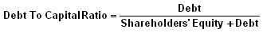

A measurement of a company's financial leverage, calculated as the company's debt divided by its total capital. Debt includes all short-term and long-term obligations. Total capital includes the company's debt and shareholders' equity, which includes common stock, preferred stock, minority interest and net debt.
Calculated as:
Companies can finance their operations through either debt or equity. The debt-to-capital ratio gives users an idea of a company's financial structure, or how it is financing its operations, along with some insight into its financial strength. The higher the debt-to-capital ratio, the more debt the company has compared to its equity. This tells investors whether a company is more prone to using debt financing or equity financing. A company with high debt-to-capital ratios, compared to a general or industry average, may show weak financial strength because the cost of these debts may weigh on the company and increase its default risk.
Because this is a non-GAAP measure, in practice, there are many variations of this ratio. Therefore, it is important to pay close attention when reading what is or isn't included in the ratio on a company's financial statements.
{kind=link}